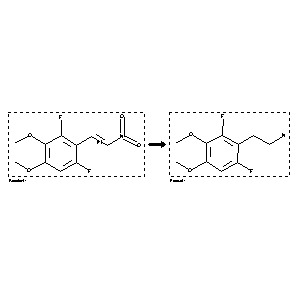

 |
| FA | RX(1); FLST(1); RX(2) |
Reaction (1 of 1)
| Reaction ID | 4445793 |
| Reactant BRN | 7432873 |
| Reactant | 1-(2,6-Difluoro-3,4-dimethoxyphenyl)-2-nitroethylene |
| Product BRN | 7464092 |
| Product | 2-(2,6-Difluoro-3,4-dimethoxyphenyl)ethylamine |
| No. of Reaction Details | 2 |
Reaction Details (1 of 1)
| Reaction Classification | Preparation |
| Yield | 51 percent (BRN=7464092) |
| Reagent | LiAlH4 |
| Solvent | tetrahydrofuran; diethyl ether |
| Other Conditions | 1.) ice-bath, 15 min, 2.) r.t., 3 h |
| Citation Pointer | 6010154; Journal; Nie, Jung-ying; Kirk, Kenneth L.; JFLCAR; J.Fluorine Chem.; EN; 74; 2; 1995; 303-306; |
Reaction Details (2 of 1)
| Reaction Classification | Preparation |
| Yield | 51 percent (BRN=7464092) |
| Reagent | LiAlH4 |
| Solvent | tetrahydrofuran; diethyl ether |
| Time | 3 hour(s) |
| Temperature | 20 |
| Reaction Type | Reduction |
| Citation Pointer | 6132227; Journal; Nie, Jun-Ying; Shi, Dan; Daly, John W.; Kirk, Kenneth L.; MCREEB; Med.Chem.Res.; EN; 6; 5; 1996; 318 - 332; |
Reference (1 of 2)
| Citation Number | 6010154 |
| Document Type | Journal |
| Authors | Nie, Jung-ying; Kirk, Kenneth L. |
| CODEN | JFLCAR |
| Journal Title | J.Fluorine Chem. |
| Language Code | EN |
| (Series) Volume | 74 |
| Number | 2 |
| Publication Year | 1995 |
| Page | 303-306 |
Reference (2 of 2)
| Citation Number | 6132227 |
| Document Type | Journal |
| Authors | Nie, Jun-Ying; Shi, Dan; Daly, John W.; Kirk, Kenneth L. |
| CODEN | MCREEB |
| Journal Title | Med.Chem.Res. |
| Language Code | EN |
| (Series) Volume | 6 |
| Number | 5 |
| Publication Year | 1996 |
| Page | 318 - 332 |